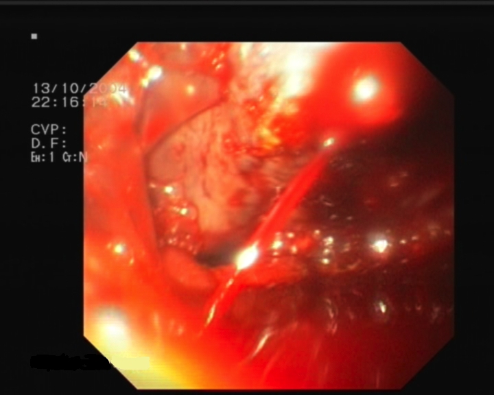

Hématémèse
Sang vomi, choc d’abord, puis la lésion que l’endoscope sépare[1].
Dix concurrents, dans l’ordre de la liste
La fréquence classe d’abord les causes chiffrées, puis viennent les lésions que la source cite sans pourcentage[7]. Le rang E, lui, suit la létalité : la rupture de varice tue le plus vite, l’ulcère qui saigne en jet suit, et l’ulcère de Dieulafoy ferme le trio[8].
- DX.1 — ulcère gastroduodénal Les ulcères gastriques et duodénaux fournissent 20 à 50 % des hémorragies hautes, ce qui les place en tête[2]. 20 à 50 % 🚩 E2 ulcère hémorragique
- DX.2 — varice Puisque les causes non variqueuses couvrent 80 à 90 %, la part variqueuse vaut 10 à 20 %[7]. 10 à 20 % 🚩 E1 rupture de varice, hémorragie massive
- DX.3 — érosions gastroduodénales Les érosions de la muqueuse gastrique et duodénale représentent 8 à 15 % des causes[7]. 8 à 15 %
- DX.4 — Mallory-Weiss La déchirure du cardia après des vomissements répétés représente aussi 8 à 15 % des causes[7]. 8 à 15 %
- DX.5 — œsophagite érosive L’œsophagite érosive représente 5 à 15 %, donc sa borne basse la range après Mallory-Weiss[7]. 5 à 15 %
- DX.6 — ulcère de Dieulafoy Sixième rang, car la source le cite parmi les causes non variqueuses sans lui donner de pourcentage[7]. 🚩 E3 saignement artériel en jet
- DX.7 — malformations artérioveineuses Septième rang, parmi les causes de la même énumération, qui ne donne aucune part chiffrée[7].
- DX.8 — tumeur Huitième rang : la tumeur œsogastrique, bénigne ou maligne, se range parmi les causes nommées sans fréquence[8].
- DX.9 — gastropathie d’hypertension portale Neuvième rang : elle se range parmi les causes portales, que le tableau suisse classe avec les varices sans pourcentage[8].
- DX.10 — ulcère œsophagien Dixième rang, car il apparaît parmi les lésions œsophagiennes traitées par inhibiteur, sans part publiée[8].
Les badges affichent la fourchette entière, et non sa seule borne haute[2]. Ainsi l’égalité entre érosions et Mallory-Weiss reste visible, tandis que l’œsophagite descend plus bas.
Tableau comparatif
Chaque ligne oppose un concurrent aux autres par le signe, l’examen, le mécanisme et le geste, d’après les deux revues suisses[8].
| Concurrent | Signe clé | Examen qui tranche | Mécanisme | Conduite immédiate | Rang E |
|---|---|---|---|---|---|
| DX.1 ulcère gastroduodénal | Anti-inflammatoire, aspirine ou anticoagulant dans l’anamnèse ; méléna fréquent. | Œsogastroduodénoscopie avec stade de Forrest. | L’acide creuse jusqu’à une artériole, et le caillot ne tient pas si le pH reste bas. | Inhibiteur dès la suspicion, hémostase combinée si Forrest Ia à IIa. | E2 |
| DX.2 varice | Cirrhose connue, ascite, ictère, sang rouge abondant. | Endoscopie : cordon œsophagien ou varice gastrique qui saigne. | L’hypertension portale dilate les veines sous-muqueuses jusqu’à la rupture. | Octréotide avant le transport, ceftriaxone, ligature ou cyanoacrylate. | E1 |
| DX.3 érosions gastroduodénales | Prise d’anti-inflammatoire ou séjour en soins intensifs (ulcérations de stress). | Endoscopie : érosions multiples superficielles. | La barrière muqueuse cède en surface, sans cratère profond. | Inhibiteur et arrêt du produit agresseur. | Aucun |
| DX.4 Mallory-Weiss | Vomissements répétés, souvent après de l’alcool, puis sang rouge. | Endoscopie : déchirure longitudinale du cardia. | La poussée de pression fend la muqueuse sans traverser la paroi. | Inhibiteur ; geste endoscopique rarement nécessaire. | Aucun |
| DX.5 œsophagite érosive | Pyrosis ancien, saignement en général modeste. | Endoscopie : érosions œsophagiennes étendues. | Le reflux acide ulcère la muqueuse œsophagienne. | Inhibiteur ; pas de ligature. | Aucun |
| DX.6 ulcère de Dieulafoy | Saignement abondant et récidivant sans douleur préalable. | Endoscopie : artère saillante sans ulcère autour, parfois vue seulement à un second passage. | Une artère de calibre anormal érode une muqueuse presque normale. | Hémostase endoscopique ; embolisation si elle échoue. | E3 |
| DX.7 malformations artérioveineuses | Anémie chronique, sang occulte ou épisodes répétés. | Endoscopie : angiodysplasies ou ectasie vasculaire antrale. | Des capillaires ectasiques saignent en nappe. | Coagulation au plasma d’argon, souvent en plusieurs séances. | Aucun |
| DX.8 tumeur | Amaigrissement, dysphagie, anémie, âge avancé. | Endoscopie avec biopsies. | La surface tumorale ulcérée suinte ou saigne. | Hémostase si besoin, puis bilan oncologique. | Aucun |
| DX.9 gastropathie d’hypertension portale | Cirrhose, saignement lent en nappe. | Endoscopie : muqueuse fundique en mosaïque. | La congestion portale fragilise la muqueuse gastrique. | Traitement de l’hypertension portale, sans ligature. | Aucun |
| DX.10 ulcère œsophagien | Odynophagie, comprimé avalé sans eau, reflux. | Endoscopie : ulcère de l’œsophage. | Une agression locale creuse la muqueuse œsophagienne. | Inhibiteur ; geste endoscopique rare. | Aucun |
Les doses figurent au point 11, chacune lue sur l’information professionnelle suisse de la spécialité nommée[9].
1. Définition et sémantique
L’hématémèse se définit, selon la recommandation suisse de 2019, comme un vomissement de sang, quel que soit son mécanisme[1]. Un effort de vomissement préalable oriente vers Mallory-Weiss, mais il ne définit pas le mot.
Le saignement prend naissance au-dessus du , donc dans l’œsophage, l’estomac ou le duodénum[1]. Il s’extériorise par du sang vomi, un marc de café ou des selles noires, tandis que l’hématochézie, plus rare, traduit un débit sévère.
Le sang rouge frais n’a pas séjourné, alors que le marc de café a été transformé par l’acide et signe un saignement mineur[4]. Le méléna, sang digéré émis par l’anus, caractérise lui aussi le versant haut. On distingue donc le marc du jet avant de prendre le pouls, car ils n’annoncent pas le même débit.
L’expression « hémorragie digestive » sans niveau reste trop vague, car la conduite change selon le côté du ligament[4]. Une rectorragie chez un malade stable relève d’ordinaire du côlon ou de l’anus.
Deux faux amis s’écartent donc à l’examen. L’hémoptysie vient de la toux et mousse, tandis qu’une épistaxis déglutie se voit dans l’arrière-gorge et les fosses nasales.
La définition reste clinique : le récit, la bassine et le doigtier fondent le mot, avant toute image[5]. L’endoscope, examen de choix, permet ensuite de nommer la lésion.
Ligament de Treitz
Ce repère sépare l’hémorragie haute, née en amont, de l’hémorragie basse, née sur le grêle, le côlon, le rectum ou l’anus[4]. Le duodénum reste donc du côté haut.
| Versant | Organes | Présentation habituelle |
|---|---|---|
| Haut | Œsophage, estomac, duodénum. | Hématémèse, marc de café, méléna. |
| Bas | Grêle, côlon, rectum, anus. | Rectorragie, hématochézie. |
| Haut massif | Même territoire haut. | Rectorragie avec instabilité constante. |
Le piège consiste à croire qu’un sang rouge anal exclut le duodénum : une hémorragie haute massive peut donner des rectorragies, avec alors une instabilité constante[4].
2. Épidémiologie
En 2019, la revue suisse rapporte une mortalité qui avoisine 10 % pour l’hémorragie haute[1]. Ce taux justifie une filière d’urgence, puisque le vomissement de sang n’est jamais un symptôme d’attente.
Les causes non variqueuses dominent, car elles représentent 80 à 90 % des épisodes[2]. Parmi elles, les ulcères occupent 20 à 50 %, les érosions et Mallory-Weiss 8 à 15 % chacun, l’œsophagite érosive 5 à 15 %[2].
| Chiffre | Population | Année | Source |
|---|---|---|---|
| Mortalité d’environ 10 %. | Hémorragies digestives hautes. | 2019. | Revue médicale suisse. |
| Causes non variqueuses 80 à 90 %, donc part variqueuse 10 à 20 %. | Ensemble des hémorragies hautes. | 2019. | Revue médicale suisse. |
| Ulcères 20 à 50 %. | Causes d’hémorragie haute. | 2019. | Revue médicale suisse. |
| Aucune source chez environ 5 % des patients. | Après endoscopie haute et coloscopie initiales. | 2010. | Revue médicale suisse. |
Helicobacter pylori est présent dans 80 % des ulcères duodénaux et 50 % des ulcères gastriques[2]. Or il colonise près d’un humain sur deux, et 90 % des habitants des pays en développement, si bien que sa présence seule ne prouve rien[2].
Lorsque l’anti-inflammatoire est pris au long cours, un ulcère apparaît chez 25 % des patients, et un saignement ou une perforation chez 2 à 4 %[2]. Le risque grimpe encore si s’y ajoutent l’aspirine, un antidépresseur sérotoninergique, un corticoïde ou un anticoagulant.
Les anticoagulants oraux directs méritent une mention propre, car le dabigatran, le rivaroxaban et l’édoxaban saignent davantage dans le tube digestif que les antivitamines K[7]. L’anamnèse médicamenteuse devient ainsi une donnée épidémiologique du lit.
Une hémorragie mineure sans comorbidité importante peut se traiter en ambulatoire, d’où l’intérêt d’une stratification précoce[8]. À l’inverse, le choc impose l’hôpital sans détour.
3. Physiopathologie
La chaîne va de l’agression à la brèche, puis au caillot instable et enfin au sang extériorisé[3]. Chaque maillon possède un geste qui le corrige, si bien que le mécanisme guide la conduite.
L’ulcère apparaît quand la barrière muqueuse cède sous l’anti-inflammatoire ou sous Helicobacter[2]. Le cratère creuse ensuite jusqu’à une artériole, ce qui explique un jet sans douleur prémonitoire.
Le caillot exige un pH supérieur à 6, de sorte que l’acide sculpte l’ulcère et dissout le bouchon à la fois[3]. L’inhibiteur de la pompe à protons coupe ce maillon dès la suspicion.
Mallory-Weiss naît d’une poussée de pression pendant le vomissement, qui fend la muqueuse près du cardia[8]. La déchirure reste superficielle, c’est pourquoi l’inhibiteur suffit le plus souvent.
La varice résulte de l’hypertension portale : la veine sous-muqueuse se dilate, puis sa paroi cède[8]. L’acide n’y joue aucun rôle, donc sa baisse ne suffit pas à fermer la brèche veineuse.
Les érosions et les ulcérations de stress traduisent une lésion aiguë de la muqueuse, souvent médicamenteuse, sans cratère profond[8]. Elles saignent donc en nappe, ce qui explique un débit habituellement modeste.
La gastropathie d’hypertension portale saigne aussi en nappe, car la muqueuse congestive se fragilise sous la pression qui dilate les varices[8]. Les angiodysplasies, y compris l’ectasie vasculaire antrale, se coagulent quant à elles au plasma d’argon, souvent en plusieurs passages[8].
Un anticoagulant ou un antiagrégant n’ouvre pas la brèche, cependant il empêche le caillot de la fermer. C’est pourquoi un ulcère banal devient hémorragique sous ces traitements, et pourquoi leur reprise se discute ensuite au cas par cas[2].
La perte de volume déclenche d’abord une tachycardie, puis une vasoconstriction qui maintient un temps la pression. Lorsque cette compensation s’épuise, la pression chute brutalement, si bien qu’un chiffre encore normal ne rassure pas.
L’ulcère de Dieulafoy repose sur une artère de calibre anormal sous une muqueuse presque intacte. Sa brèche minuscule saigne pourtant en jet, ce qui explique les endoscopies initiales parfois blanches[7].
| Perturbation | Exploration qui la montre | Thérapeutique qui la corrige |
|---|---|---|
| L’acide dissout le caillot. | Contexte clinique, puis endoscopie. | Inhibiteur de la pompe à protons. |
| L’ulcère ouvre une artériole. | Endoscopie avec stade de Forrest. | Adrénaline diluée et coagulation bipolaire ou clips. |
| La varice œsophagienne se rompt. | Endoscopie : cordon et jet. | Octréotide, puis ligature élastique. |
| La varice gastrique saigne. | Endoscopie : siège gastrique. | Injection de cyanoacrylate. |
| Le sang dégradé dans l’intestin favorise l’encéphalopathie. | Conscience et astérixis chez le cirrhotique. | Lactulose. |
| Le volume perdu dépasse la compensation. | Pression, pouls, hémoglobine. | Remplissage, puis transfusion restrictive. |
Chez le cirrhotique, le saignement favorise aussi l’infection, et l’antibioprophylaxie abaisse la mortalité[8]. Le mécanisme dépasse donc la seule brèche vasculaire.
Le méléna suppose un séjour du sang dans l’intestin, alors que la rectorragie d’origine haute signe un transit foudroyant[4]. Dans ce second cas, l’instabilité hémodynamique ne manque jamais.
4. Démarche diagnostique
Les graves passent avant les fréquents : on cherche d’abord l’instabilité, puis la rupture de varice E1, ensuite l’ulcère hémorragique E2 et le Dieulafoy E3[8]. L’ulcère reste pourtant la cause la plus fréquente, si bien que fréquence et létalité ne se confondent pas.
suffisent au lit : la pression, le terrain hépatique et les médicaments gastrotoxiques. Le piège est de commencer par Helicobacter, qui explique un ulcère sans dire si le malade est en train de mourir.
| Diagnostic | Élément qui tranche | Piège | Conduite si le résultat est positif |
|---|---|---|---|
| 🚩 E1 rupture de varice. | Cirrhose connue ou signes d’hypertension portale, puis cordon ou varice gastrique à l’endoscopie. | Traiter la varice comme un ulcère. | Octréotide, ceftriaxone, lactulose, ligature ou cyanoacrylate ; sonde de Linton ou TIPS si échec. |
| 🚩 E2 ulcère hémorragique. | Cratère avec saignement actif ou vaisseau visible. | Croire qu’un ulcère connu dispense de regarder. | Hémostase combinée sous inhibiteur. |
| 🚩 E3 ulcère de Dieulafoy. | Artère saillante sans cratère autour. | Conclure à une endoscopie normale après un premier passage sous caillots. | Hémostase endoscopique, embolisation si elle échoue. |
| Bas risque. | Glasgow-Blatchford de 0 ou 1. | Renvoyer sans avoir calculé le score. | Domicile sous inhibiteur, endoscopie ambulatoire. |
Chez le patient stable, avancer l’endoscopie en urgence ne change nettement ni la survie à 30 jours, ni le séjour, ni la récidive[5]. On réanime donc d’abord, puis on fixe l’heure de l’optique selon le risque.
Les recommandations suisses placent l’endoscopie dans les 24 heures pour la majorité des patients[3]. Cependant on l’envisage dans les 12 heures chez l’instable ou à haut risque, sans jamais sacrifier la réanimation[3].
La société européenne d’endoscopie, en 2021, ne recommande pas l’endoscopie urgente systématique dans les 12 heures, faute de bénéfice démontré[13]. Les deux textes convergent ainsi : la réanimation prime, puis l’optique suit le risque.
Ordre des trois discriminants
| Ordre | Question | Si oui |
|---|---|---|
| 1 | La pression tient-elle ? | Sinon, remplissage immédiat et endoscopie rapprochée. |
| 2 | Le foie est-il malade ? | Suspecter une rupture de varice et lancer l’octréotide. |
| 3 | Un produit gastrotoxique est-il pris ? | Penser ulcère ou érosions, puis Helicobacter. |
L’ordre suit la vitesse de la mort, et non la fréquence : c’est pourquoi la varice passe avant l’ulcère, plus courant[8].
5. Anamnèse ciblée et drapeaux rouges
Chaque question vise un mécanisme : on date le premier sang, on demande la couleur, le volume estimé et ce qui a précédé[1]. Un vomissement alimentaire répété avant le sang oriente vers Mallory-Weiss.
Une cirrhose connue, une ascite ou un ictère rendent la varice plausible, cependant ils ne la prouvent pas. Ils suffisent néanmoins à déclencher l’octréotide avant le transport[8].
On relève les anti-inflammatoires, l’aspirine, les inhibiteurs de la recapture de la sérotonine, les corticoïdes et les anticoagulants, car chacun augmente le risque[2]. Un antécédent d’ulcère et un âge supérieur à 65 ans désignent aussi le patient à risque[2].
L’anticoagulant oral direct se nomme précisément, puisque le dabigatran, le rivaroxaban et l’édoxaban saignent davantage dans le tube digestif[7]. L’heure de la dernière prise orientera ensuite l’équipe hospitalière.
On demande aussi les selles des dernières heures, car un méléna situe le foyer en haut[4]. La syncope, la soif intense et la vision qui se brouille racontent déjà la perte de volume.
Un amaigrissement, une dysphagie ou une anémie ancienne font chercher une tumeur. De même, l’information professionnelle du pantoprazole classe l’hématémèse parmi les symptômes d’alarme qui imposent d’exclure une malignité[9].
| Drapeau rouge | Signification | Action immédiate |
|---|---|---|
| 🚩 Pression qui ne tient pas ou conscience qui baisse. | Choc hémorragique, létal en minutes. | Remplissage, voies aériennes, transfert monitoré. |
| 🚩 Cirrhose et sang abondant. | Rupture de varice probable. | Octréotide avant le transport, antibioprophylaxie à l’hôpital. |
| 🚩 Sang rouge anal avec malaise. | Foyer haut massif jusqu’à preuve du contraire. | Endoscopie haute en priorité. |
| 🚩 Anticoagulant en cours et sang frais. | Caillot désavantagé, endoscopie dans un délai rapproché. | Réanimer sans débat de molécule, informer l’endoscopiste. |
| 🚩 Amaigrissement ou dysphagie. | Tumeur possible. | Endoscopie avec biopsies. |
6. Examen physique ciblé, région par région
On mesure d’abord ce qui tue, et le reste de l’examen attend que la pression soit connue. Selon la revue suisse, le patient est instable dès que la systolique descend sous 100 mm Hg ou que le pouls dépasse 100/min[7].
Bouche et gorge
La bouche normale ne montre ni caillot ni filet actif au fond de la gorge. Ainsi le sang frais sur la langue confirme l’origine digestive, tandis qu’un filet descendant des fosses nasales oriente vers une épistaxis déglutie.
On aspire, on éclaire et on évite l’hyperextension chez qui vomit encore, car le risque d’inhalation persiste tant que le sang remonte.
Thorax et cœur
Le pouls et la fréquence respiratoire racontent la perte de volume, alors qu’une longue auscultation n’apporte rien à cette heure. Un bêtabloquant peut toutefois masquer la tachycardie, ce qui trompe sur la gravité.
Une insuffisance cardiaque ou une cardiopathie ischémique compte 2 points dans le score de Rockall, et la première ajoute aussi 2 points au Glasgow-Blatchford[7]. On les note donc dès l’examen.
Abdomen
Une ascite, une circulation veineuse collatérale ou un foie dur rendent la varice plausible ; l’hépatopathie compte d’ailleurs 2 points dans le Glasgow-Blatchford[7]. L’image reste néanmoins nécessaire pour nommer la lésion.
Une défense généralisée fait craindre une perforation, qui change la filière. Lorsque le choc domine, on n’insiste pas sur la palpation fine, puisque la réanimation passe avant la sémiologie.
Une hépatomégalie dure ou une splénomégalie renforcent l’hypothèse portale, tandis qu’un épigastre douloureux oriente plutôt vers l’ulcère.
Peau, membres et conscience
Des marbrures, des genoux froids et une conscience fluctuante installent le choc plus sûrement qu’un chiffre encore en route. Par ailleurs, l’ictère et les angiomes stellaires renforcent la piste hépatique.
On compte aussi la fréquence respiratoire et la saturation, car une inhalation de sang peut compliquer le vomissement. Si la conscience baisse, on protège alors les voies aériennes avant tout transfert.
Le toucher rectal cherche un méléna, qui compte 1 point dans le Glasgow-Blatchford, ou du sang rouge[7]. Il se fait dès que le malade peut être tourné sans danger.
Chez le cirrhotique, un astérixis ou une confusion signalent une encéphalopathie, que le sang digéré aggrave[8]. C’est pourquoi le lactulose sert précisément à évacuer ces résidus de sang.
7. Approche syndromique
7.1 Syndrome d’hémorragie haute extériorisée par la bouche
Les signes fonctionnels sont le vomissement rouge, le marc de café et la lipothymie ; les signes physiques sont le sang dans la bassine, la tachycardie et la pression basse[1].
Une se reconnaît en regardant ce qui a été vomi, et non sur un compte rendu tardif. Le , sang altéré par l’acide, signe un saignement mineur[4].
7.2 Syndrome de sang digéré ou de sang rouge anal
Le se reconnaît au doigtier noir et poisseux, qu’on distingue d’un traitement martial par la consistance. En effet, il caractérise le haut au même titre que l’hématémèse[4].
La rectorragie avec instabilité constitue un troisième visage du syndrome haut, et non un saignement bas rassurant. L’instabilité est alors toujours présente lorsque le sang rouge anal vient d’en haut[4].
7.3 Syndrome d’hypertension portale
L’ascite, l’ictère, la circulation collatérale et l’encéphalopathie dessinent ce syndrome, qui fait suspecter une rupture de varice ou une gastropathie portale[8]. Dès lors, le traitement vasoactif et l’antibioprophylaxie commencent avant l’image.
Cependant une gastropathie portale saigne en nappe, si bien qu’elle donne plus souvent une anémie qu’un choc[8].
| Syndrome | Signes fonctionnels | Signes physiques |
|---|---|---|
| 7.1 Hémorragie haute par la bouche. | Vomissement rouge ou marc, malaise, soif. | Sang dans la bassine, pouls rapide, pression basse. |
| 7.2 Sang digéré ou rectorragie haute. | Selles noires ou sang rouge anal avec faiblesse. | Doigtier noir, ou sang rouge et choc associés. |
| 7.3 Hypertension portale. | Ventre qui gonfle, ictère, ralentissement. | Ascite, circulation collatérale, astérixis. |
Hématémèse
| Aspect | Ce qu’il signifie |
|---|---|
| Sang rouge, caillots. | Saignement actif, débit élevé possible. |
| Marc de café. | Sang altéré par l’acide, saignement mineur. |
| Sang mousseux après une toux. | Hémoptysie, pas une hématémèse. |
C’est un vomissement de sang, quel que soit le mécanisme, et la revue de 2019 la place au centre de la présentation haute[1].
Marc de café
Le vomissement sombre en marc traduit un saignement mineur, car l’acide a déjà modifié le sang[4]. Le piège est d’y voir un aliment, ou au contraire un choc absent.
Méléna
Le méléna caractérise le haut, comme l’hématémèse[4]. On le recherche au doigtier, et l’on ne commence pas par une coloscopie pour ce seul signe.
8. Diagnostic positif et critères
Le diagnostic positif d’hémorragie haute repose sur l’hématémèse, le marc de café ou le méléna, comme le pose la revue suisse de 2019[1]. L’endoscope localise ensuite la lésion, mais le syndrome se nomme sans lui.
Pour repérer le bas risque, le atteint 99 % de sensibilité, tandis que sa spécificité n’est que de 32 % de spécificité[3]. Un score de 0 permet le retour sans endoscopie immédiate, et la borne de 1 a aussi été étudiée[3].
La société européenne d’endoscopie retient elle aussi un score de 1 ou moins pour une prise en charge ambulatoire, avec endoscopie ambulatoire[13].
Le score de Rockall, de 0 à 11 points, ajoute les données endoscopiques et prédit récidive et mortalité ; moins de 2 points signe un bas risque[3].
La classification de décrit l’ulcère vu à l’endoscope ; elle oriente l’hémostase et chiffre le risque de récidive[7].
| Critère | Seuil | Ce qu’il permet | Ce qu’il ne permet pas |
|---|---|---|---|
| Glasgow-Blatchford. | 0 ou 1. | Domicile, endoscopie ambulatoire. | Il ne décrit pas la lésion. |
| Rockall. | Moins de 2, sur 0 à 11. | Bas risque après endoscopie. | Il ne décide pas seul le retour. |
| Forrest. | Ia, Ib, IIa, IIb. | Indique l’hémostase endoscopique. | Il ne s’applique pas aux varices. |
| Hémoglobine. | 70 g/L. | Seuil transfusionnel restrictif. | Il ne dit pas la cause. |
Un antécédent d’ulcère, un anti-inflammatoire ou une cirrhose orientent, mais seul l’endoscope affirme la lésion. Helicobacter se recherche ensuite sur l’ulcère trouvé et s’éradique s’il est présent[2].
Scores de Glasgow-Blatchford et de Rockall
| Critère | Valeur | Points |
|---|---|---|
| Urée (mmol/L) | 6,5 à moins de 8,0 ; 8,0 à moins de 10,0 ; 10,0 à moins de 25 ; 25 ou plus. | 2 ; 3 ; 4 ; 6. |
| Hémoglobine, homme (g/L) | 120 à moins de 130 ; 100 à moins de 120 ; moins de 100. | 1 ; 3 ; 6. |
| Hémoglobine, femme (g/L) | 100 à moins de 120 ; moins de 100. | 1 ; 6. |
| Systolique (mm Hg) | 100 à 109 ; 90 à 99 ; moins de 90. | 1 ; 2 ; 3. |
| Autres marqueurs | Pouls de 100/min ou plus ; méléna ; syncope ; hépatopathie ; insuffisance cardiaque. | 1 ; 1 ; 2 ; 2 ; 2. |
| Variable | 0 point | 1 point | 2 points | 3 points |
|---|---|---|---|---|
| Âge | Moins de 60 ans. | 60 à 79 ans. | 80 ans ou plus. | — |
| Choc | Absent. | Pouls supérieur à 100/min, systolique de 100 mm Hg ou plus. | Pouls supérieur à 100/min, systolique inférieure à 100 mm Hg. | — |
| Comorbidités | Aucune. | — | Insuffisance cardiaque, cardiopathie ischémique. | Insuffisance rénale ou hépatique, néoplasie disséminée. |
| Diagnostic | Mallory-Weiss, aucune lésion. | Tout autre diagnostic. | Néoplasie digestive. | — |
| Stigmates | Aucun ou taches noires. | — | Sang, caillot adhérent, saignement actif, vaisseau visible. | — |
Le Glasgow-Blatchford se calcule avant l’endoscope et décide la sortie, tandis que le Rockall exige l’endoscopie[3]. Additionner les deux fabriquerait une permission qu’aucun texte ne donne.
Classification de Forrest, stigmates d’ulcère
| Stade | Aspect endoscopique | Traitement endoscopique proposé |
|---|---|---|
| Ia | Saignement actif pulsatile. | Adrénaline injectée, puis coagulation bipolaire ou clips. |
| Ib | Saignement actif non pulsatile. | Même traitement combiné. |
| IIa | Vaisseau visible sans saignement. | Même traitement combiné. |
| IIb | Caillot adhérent. | Tentative de retrait du caillot, puis traitement comme Ia à IIa. |
| IIc | Tache pigmentée. | Pas de traitement endoscopique. |
| III | Base propre. | Pas de traitement endoscopique. |
Pour le saignement actif, la société européenne complète toujours l’adrénaline par un second moyen, thermique au contact ou mécanique, car l’injection seule ne suffit pas[13].
9. Examens complémentaires
9.a Référence
Devant un sang vomi, des selles noires ou des rectorragies massives avec choc, l’œsogastroduodénoscopie est le premier examen[5]. En effet, aucun dosage sanguin ne nomme la lésion à sa place, et aucune imagerie en coupe ne la remplace pour voir un jet.
Elle localise, classe selon Forrest et traite dans le même geste[7]. C’est pourquoi on la prescrit à jeun, avec une voie veineuse déjà en place et un patient dont les voies aériennes sont sûres.
9.b Première intention
Au lit, on mesure d’abord la pression, le pouls, la conscience et l’hémoglobine, car ces valeurs décident de la réanimation. L’urée, le groupe sanguin, la crase et la fonction hépatique complètent le bilan, puisque l’urée entre dans le score de Glasgow-Blatchford[7].
Le délai de l’endoscope suit le risque : dans les 24 heures pour la plupart des hospitalisés, et dans les 12 heures si l’instabilité persiste malgré la réanimation[7].
Lorsque le risque est élevé ou que le saignement persiste, l’érythromycine donnée avant l’endoscope vide l’estomac du sang et améliore la visibilité[7]. Elle réduit aussi le recours à une seconde endoscopie et aux transfusions.
On interprète ensuite chaque image par son siège et sa forme : un cordon œsophagien signe une varice, un cratère un ulcère, des traînées une œsophagite et une déchirure cardiale un Mallory-Weiss[8].
9.c Alternatives
Lorsque l’endoscope échoue après 2 tentatives d’hémostase, l’artériographie sélective avec embolisation ou la chirurgie prennent le relais[8]. L’IRM n’a pas de place dans l’urgence, car elle ne voit pas un jet et éloigne le malade du monitorage.
La grossesse ne contre-indique pas l’endoscopie, qui n’injecte pas d’iode ; elle oriente surtout le choix des médicaments, notamment du pantoprazole réservé aux nécessités claires[9].
Lorsque la pression tient et que l’hémoglobine baisse peu, l’endoscopie peut se faire en ambulatoire[5]. L’anticoagulation ou l’insuffisance rénale ne changent pas l’examen, mais elles changent l’heure et la préparation.
9.d Deuxième intention
Le sang rouge anal sans instabilité se regarde par coloscopie, après préparation[5]. Si le haut et le côlon restent muets, on répète les examens lorsque la préparation était mauvaise.
Environ 5 % des patients restent sans source identifiée, même après endoscopie haute et coloscopie initiales[5]. Ce chiffre interdit donc de conclure trop tôt à l’absence de lésion.
Après un ulcère compliqué, une endoscopie de contrôle à 6 semaines biopsie l’ulcère gastrique pour écarter une tumeur[8]. En revanche, l’ulcère duodénal se contrôle surtout par l’éradication de Helicobacter.
| Résultat | Signification | Conduite |
|---|---|---|
| Cordon œsophagien et jet. | Varice œsophagienne qui saigne. | Ligature élastique ; cyanoacrylate en alternative. |
| Varice de l’estomac ou du duodénum. | Varice gastroduodénale. | Cyanoacrylate, traitement de choix. |
| Cratère avec saignement actif, Forrest Ia ou Ib. | Ulcère à haut risque. | Adrénaline et seconde méthode, thermique ou clips. |
| Vaisseau visible, Forrest IIa. | Ulcère à haut risque. | Hémostase endoscopique et inhibiteur. |
| Base propre, Forrest III. | Ulcère à bas risque. | Pas de geste endoscopique. |
| Artère saillante sans cratère. | Ulcère de Dieulafoy. | Hémostase endoscopique, embolisation si échec. |
| Déchirure au cardia. | Mallory-Weiss. | Inhibiteur, geste seulement si le saignement continue. |
| Rien au premier passage. | Foyer manqué possible. | Répéter l’examen si la préparation était mauvaise. |
| Hémoglobine inférieure à 70 g/L. | Seuil transfusionnel restrictif. | Transfuser, cible plus haute en cas de cardiopathie ischémique. |
La modalité est une endoscopie haute, en vue endoluminale de l’œsophage distal.
Le fichier porte une date, des libellés d’appareil et une bande sombre en bas, qui ne sont pas des lésions.

Le cliché brut se regarde d’abord, afin d’y chercher le cordon et le jet.
La copie annotée numérote les repères, et elle est une œuvre dérivée du même fichier.
Lecture guidée. Chaque repère se lit dans l’ordre, parce que le cordon se distingue du jet et de la flaque.
- Le premier repère suit le cordon longitudinal, saillant et plus sombre que le lac, qui est la varice.
- Le deuxième repère montre le jet rouge vif, qui part vers le bord supérieur droit.
- Le troisième repère montre le sang déclive, qui noie la muqueuse sans être la source.
- Le quatrième repère désigne l’inscription et les libellés d’appareil, qui ne constituent pas une lésion.
Pièges. Trois erreurs reviennent, et chacune change le geste.
- Un reflet de lampe imite un jet ; il suit pourtant la lumière quand l’optique bouge.
- Aucun cratère n’apparaît ici, si bien que cette image ne justifie pas un geste d’ulcère.
- Le cliché ne dit rien de la pression artérielle, puisque le choc se juge au lit.
Ce que l’image décide : la ligature du cordon œsophagien, ou le cyanoacrylate en alternative, avec octréotide et ceftriaxone déjà en cours[8].
La biologie se lit avec , l’exploration avec et la lésion avec . Ces trois regards restent distincts, car un chiffre normal n’efface pas un jet et un jet n’efface pas un choc.
Une transfusion restrictive à 70 g/L, comparée à une cible libérale à 90 g/L, améliore la survie à 6 semaines et réduit la récidive[7]. Cependant, chez le patient porteur d’une cardiopathie ischémique, la cible d’hémoglobine se place plus haut[14].
Œsogastroduodénoscopie
| Avant | Pendant | Après |
|---|---|---|
| Voies aériennes sûres, voie veineuse, jeûne, érythromycine si haut risque. | Siège, forme, Forrest, geste d’hémostase. | Surveillance, inhibiteur, contrôle selon la lésion. |
Cet examen reste celui de choix devant une hématémèse, un méléna ou une rectorragie massive avec instabilité[5]. Le piège est de le commencer chez un malade dont les voies aériennes et la pression ne sont pas tenues.
Lésion variqueuse
| Siège | Geste | Après le geste |
|---|---|---|
| Œsophage. | Ligature élastique ; cyanoacrylate possible. | Ligatures répétées jusqu’à l’éradication. |
| Estomac ou duodénum. | Cyanoacrylate. | Bêtabloquant non cardiosélectif au long cours. |
| Échec endoscopique. | Sonde de Linton. | TIPS en relais. |
Le cordon et le jet définissent la rupture de varice, que l’arbre place en E1[8]. Le bêtabloquant remplace ensuite l’octréotide, une fois celui-ci arrêté.
Hémoglobine interprétée
| Stratégie | Seuil | Survie à 6 semaines | Récidive |
|---|---|---|---|
| Restrictive. | 70 g/L. | 95 %. | 10 %. |
| Libérale. | 90 g/L. | 91 %. | 16 %. |
La recommandation européenne vise une hémoglobine entre 7 et 9 g/dL, avec une cible plus haute en cas de cardiopathie ischémique[14]. On ne transfuse donc pas au-dessus du seuil par réflexe, sauf chez le coronarien.
10. Arbre décisionnel
- Si le malade est instable ou qu’une rupture de varice E1 est suspectée, on réanime et on lance l’octréotide avant l’endoscope[8].
- Si le choc est tenu et que l’endoscope montre un cordon œsophagien, on ligature ou on injecte du cyanoacrylate[8].
- Si la varice siège dans l’estomac ou le duodénum, on injecte le cyanoacrylate, traitement de choix[5].
- En cas d’échec endoscopique et pharmacologique, on pose une sonde de Linton ou l’on discute un TIPS[8].
- Si l’image montre un ulcère Forrest Ia à IIa, ulcère hémorragique E2, on associe adrénaline et seconde méthode d’hémostase[13].
- Si une artère saillante saigne sans cratère, on retient un Dieulafoy E3 et on l’hémostase par voie endoscopique.
- Si le saignement persiste après 2 tentatives d’hémostase, on recourt à l’embolisation ou à la chirurgie[8].
- Si le score de Glasgow-Blatchford vaut 0 ou 1, on autorise le domicile avec endoscopie ambulatoire[7].
- Si le sang est rouge et anal avec instabilité, on reste sur une hémorragie haute massive et on explore le haut[4].
L’arbre commence donc par l’instabilité et la varice, puis il sépare l’ulcère selon Forrest. Chaque nœud nomme un signe, un examen ou un geste, et aucun ne renvoie à une impression.
Si la pression chute pendant l’endoscopie, on revient au premier nœud, car l’optique ne remplace jamais le remplissage. Le pouls reste le juge, tandis que la couleur du sang attend.
Au-delà de 1, le score de Glasgow-Blatchford conduit à une endoscopie hospitalière[7]. Le Rockall, calculé après l’optique, précise ensuite le risque de récidive.
11. Prise en charge selon les recommandations suisses
11.A But
Garder le malade en vie impose d’abord la volémie, puis la transfusion guidée sur 70 g/L[3]. Localement, on vise un pH supérieur à 6, parce que le caillot tient alors[3].
On ne promet pas une mortalité nulle, puisque la revue suisse rappelle que cette hémorragie tue encore[1]. Le but secondaire est de prévenir la récidive, l’infection et l’encéphalopathie chez le cirrhotique.
11.B Moyens
L’ordre est fixe : voies aériennes et circulation, inhibiteur de la pompe à protons, puis endoscope au moment que le risque autorise. détaille la première heure[3].
Au cabinet, devant une rupture de varice suspectée, la revue de 2010 recommande un bolus d’octréotide avant le transport à l’hôpital, car il freine le saignement portal[8]. On pose aussi une voie veineuse de gros calibre, on couche le malade sur le côté et on appelle l’ambulance médicalisée.
Pantozol®, information professionnelle Swissmedic n° 55551, se prescrit à 40 mg par jour en une injection intraveineuse matinale de 2 à 15 minutes, en général pendant 3 à 7 jours[9]. Il est contre-indiqué si le patient est hypersensible au pantoprazole ou aux benzimidazoles substitués[9].
L’insuffisance hépatique sévère limite Pantozol® à 20 mg par jour, contre-indications respectées ; chez l’insuffisant rénal ou le sujet âgé, on ne dépasse pas 40 mg par jour[9].
Les recommandations emploient un schéma à haute dose : une injection initiale, puis une perfusion ininterrompue jusqu’à 72 heures après l’endoscopie[7]. Ce schéma n’est pas la posologie libellée en Suisse, si bien qu’on le prescrit en le sachant hors libellé.
Sandostatin®, n° 49137, se prescrit à 25 µg/h en perfusion continue, pendant 5 jours au plus et sans jamais dépasser 50 µg/h[10]. Elle est contre-indiquée si le patient est hypersensible à l’octréotide[10].
Avec Sandostatin®, des blocs auriculoventriculaires sont survenus quand 50 µg en bolus précédaient 50 µg/h[10]. On surveille donc le rythme et la glycémie, et l’allaitement est contre-indiqué.
Rocephin®, n° 44625, se prescrit chez l’adulte à 1 à 2 g par jour, en une injection[12]. Elle est contre-indiquée en cas d’hypersensibilité à toute céphalosporine et chez le nouveau-né recevant du calcium intraveineux[12].
L’antibioprophylaxie du cirrhotique réduit les infections, la récidive précoce et la mortalité, et la ceftriaxone y est le choix de référence[8]. Par ailleurs, le lactulose prévient l’encéphalopathie hépatique en évacuant le sang digéré.
Erythrocin®, n° 20258 : employée à 250 mg avant l’endoscope pour son effet prokinétique, elle est hors de son indication libellée[11]. Elle se perfuse en 60 minutes au moins et elle est contre-indiquée si le QT est allongé ou si le foie est gravement insuffisant[11].
La revue suisse l’administre une seule fois, 30 à 120 minutes avant l’optique, lorsque le risque est élevé[7]. Avant de la donner, on vérifie donc la kaliémie, la magnésémie et les médicaments qui allongent le QT, dont la dompéridone.
| Spécialité | Dose | Voie et durée | Contre-indications majeures | Situations particulières |
|---|---|---|---|---|
| Pantozol®, n° 55551. | 40 mg une fois par jour[9]. | Intraveineuse 3 à 7 jours, puis passage à la voie orale. | Contre-indication : hypersensibilité au pantoprazole ou aux benzimidazoles substitués. | Insuffisance hépatique sévère : 20 mg par jour, grossesse si nécessité claire, pas avant 18 ans[9]. |
| Sandostatin®, n° 49137. | 25 µg/h, sans dépasser 50 µg/h[10]. | Perfusion continue, 5 jours au plus. | Contre-indication : hypersensibilité à l’octréotide. | Glycémie à surveiller ; pas d’allaitement. |
| Rocephin®, n° 44625. | 1 à 2 g par jour[12]. | Une injection toutes les 24 heures. | Contre-indications : hypersensibilité aux céphalosporines ; nouveau-né sous calcium intraveineux. | Allaitement : ne pas utiliser ; grossesse : indication stricte. |
| Erythrocin®, n° 20258. | 250 mg hors indication[11]. | Perfusion d’au moins 60 minutes, bolus interdit. | Contre-indications : QT long, arythmie ventriculaire, hypokaliémie, insuffisance hépatique sévère, dompéridone. | Grossesse si nécessité claire ; allaitement déconseillé. |
| Ligature élastique. | Geste, pas de dose. | Endoscopique, répété jusqu’à éradication. | Ne traite pas un ulcère. | Relais par bêtabloquant non cardiosélectif. |
| Cyanoacrylate. | Volume non chiffré dans la source. | Injection endoscopique. | Ne traite pas un ulcère. | Choix des varices gastroduodénales. |
Chez la femme enceinte, l’ordre reste identique ; le pantoprazole et l’érythromycine ne s’y emploient qu’en cas de nécessité claire, et la ceftriaxone sur indication stricte[11].
Pour l’ulcère, l’aspirine prise en prévention secondaire est poursuivie, ou reprise dans un délai de 3 à 5 jours[13]. Ensuite l’anticoagulation est reprise dès le saignement contrôlé, idéalement vers 7 jours[13].
Helicobacter est éradiqué après stabilisation de l’hémorragie, et non avant la réanimation[8]. De même, l’anti-inflammatoire est arrêté quand une alternative existe.
Urgence, conduite chronologique
- On parle au malade, on compte le pouls et on mesure la pression, car le choc se voit avant le laboratoire.
- Si la pression ne tient pas, on pose une voie veineuse de gros calibre et on remplit par cristalloïdes[14].
- Dès la suspicion, on commence l’inhibiteur, puisque le caillot a besoin d’un pH supérieur à 6[3].
- Chez le cirrhotique, on ajoute octréotide, ceftriaxone et lactulose avant l’endoscope[8].
- On fixe l’endoscopie dans les 12 heures si l’instabilité persiste, sinon dans les 24 heures[7].
- Selon l’image, on ligature, on injecte du cyanoacrylate ou on traite l’ulcère par hémostase combinée[8].
- Si le score de Glasgow-Blatchford vaut 0 ou 1, le retour avec endoscopie ambulatoire reste permis[7].
11.C Surveillance
On surveille la pression, le pouls, la conscience, le volume vomi et l’hémoglobine, à un rythme serré tant que le choc n’est pas écarté. Cette cadence se relâche lorsque l’hémodynamique tient et que l’hémoglobine est peu abaissée[5].
Sous octréotide, on contrôle la glycémie et le rythme cardiaque, puisque des blocs auriculoventriculaires ont été rapportés[10]. Sous érythromycine, on vérifie le QT à l’électrocardiogramme avant la perfusion.
Un nouveau sang rouge, une chute de pression ou une hémoglobine qui redescend ramènent le malade dans l’arbre. Une récidive se traite d’abord par une nouvelle endoscopie, puis par embolisation et enfin par chirurgie[13].
11.D Pronostic, guérison et sortie
La mortalité avoisine 10 %, si bien que l’arrêt apparent du vomissement ne signe pas la guérison[1]. Le critère local de guérison est l’arrêt du saignement et, pour l’ulcère, l’éradication du germe.
On sort le malade un par un sur des critères : il parle, sa pression tient sans remplissage et le vomissement a cessé. Ensuite, l’hémoglobine ne chute plus et l’endoscopie est faite ou programmée.
Un retour sous inhibiteur avec endoscopie ambulatoire concerne le score inférieur ou égal à 1[3]. Un malade encore instable reste hospitalisé, car l’arbre le garde au premier nœud.
12. Prévention
La prévention primaire concerne les patients de plus de 65 ans, ceux qui ont déjà eu un ulcère, et ceux qui reçoivent aussi un antiagrégant, un anticoagulant ou un corticoïde[2]. On n’ajoute donc pas un inhibiteur par habitude lorsqu’aucun facteur n’est présent.
Comme un usage chronique d’anti-inflammatoire donne un ulcère dans 25 % des cas et une complication dans 2 à 4 %, on choisit l’antalgique avant de protéger tout le monde[2].
La prévention secondaire consiste à éradiquer Helicobacter après stabilisation, et à arrêter l’anti-inflammatoire quand une alternative existe[8]. Chez le cirrhotique, le bêtabloquant non cardiosélectif et les ligatures jusqu’à éradication préviennent la récidive variqueuse.
La prévention tertiaire reste la filière après le premier épisode : endoscopie de contrôle, reprise réfléchie des antithrombotiques et consigne écrite. Ainsi un sang rouge neuf avec malaise ramène le patient aux urgences, avant même le rendez-vous[8].
L’éradication de Helicobacter se contrôle après le traitement, car un germe persistant expose à un nouvel ulcère. De même, l’aspirine de prévention cardiovasculaire est poursuivie ou vite reprise, puisque son arrêt prolongé expose le patient à l’accident ischémique[13].
On explique enfin au patient les signes d’alarme, qui sont le sang rouge, les selles noires, le malaise ou la soif intense, et qui imposent de revenir en ambulance.
Hors varices, les causes réunies atteignent 80 à 90 % des épisodes, si bien que prévenir l’ulcère couvre la majorité des récidives[2].
13. Points clés
- La réanimation précède l’endoscope, car le choc tue plus vite que le nom de la lésion.
- L’ulcère est la cause la plus fréquente, mais la rupture de varice E1 change le geste[8].
- Un score de Glasgow-Blatchford de 1 ou moins autorise le domicile avec endoscopie ambulatoire[13].
- On transfuse sous 70 g/L, sans relever la cible par habitude hors cardiopathie ischémique[3].
- Pantozol® se prescrit à 40 mg par jour par voie intraveineuse, et il est contre-indiqué en cas d’hypersensibilité aux benzimidazoles[9].
14. Pièges et questions fréquentes à l’examen fédéral suisse
Pourquoi faut-il traiter une suspicion de varice avant de l’avoir vue ? Parce que l’octréotide, la ceftriaxone et le lactulose réduisent la récidive, l’infection et l’encéphalopathie dès avant l’endoscope[8].
Peut-on renvoyer à domicile un score de Glasgow-Blatchford très bas ? Oui, car un score de 1 ou moins permet le retour avec inhibiteur et endoscopie ambulatoire, si la pression tient[13].
Une rectorragie chez un malade pâle et tachycarde autorise-t-elle à préparer d’abord le côlon ? Non, car une hémorragie haute massive peut donner des rectorragies avec instabilité[4].
Faut-il ligaturer une varice gastrique comme une varice œsophagienne ? Non, car le cyanoacrylate reste le geste privilégié pour une varice de l’estomac ou du duodénum[5].
Le coronarien qui saigne se transfuse-t-il au même seuil ? Non, car la cible d’hémoglobine se place plus haut en cas de cardiopathie ischémique[14].
Une endoscopie très précoce améliore-t-elle la survie du patient stable ? Non, car la recommandation européenne ne recommande pas l’endoscopie dans les 12 heures en routine[13].
Un ulcère à base propre, Forrest III, demande-t-il un geste endoscopique ? Non, car seuls le saignement actif, le vaisseau visible ou le caillot adhérent en reçoivent un[7].
L’érythromycine prokinétique d’Erythrocin® est-elle libellée en Suisse ? Non, car la dose de 250 mg avant endoscopie est hors indication, et le QT long la contre-indique[11].
Faut-il arrêter définitivement l’aspirine de prévention secondaire après un ulcère hémorragique ? Non, car on la poursuit ou on la reprend en 3 à 5 jours[13].
Ce cours, lu seul avec ses fenêtres, suffit-il pour gagner 90 à 100 % des points sur ce sujet et pour traiter ce patient en sécurité ?
Oui, car la définition, les dix concurrents, l’arbre ouvert sur l’instabilité et la varice, le cliché et les doses AIPS permettent de décider. Le malade instable est réanimé, l’endoscope vient au délai du risque, et chaque lésion reçoit son geste.
Sources
- [1] Revue médicale suisse, 2019. Gestion optimale et endoscopique lors d’hémorragie digestive haute : définition, mortalité, territoires. revmed.ch, 2019. Consulté le 10 novembre 2026.
- [2] Revue médicale suisse, 2019. Causes, parts, Helicobacter, anti-inflammatoires et prévention. revmed.ch, causes. Consulté le 10 novembre 2026.
- [3] Revue médicale suisse, 2019. Scores, délais endoscopiques, seuil transfusionnel, inhibiteur. revmed.ch, conduite. Consulté le 10 novembre 2026.
- [4] Revue médicale suisse, 2010. Hémorragie digestive aiguë : lieu du saignement et sémiologie. revmed.ch, 2010. Consulté le 10 novembre 2026.
- [5] Revue médicale suisse, 2010. Endoscopie, coloscopie, ligature et cyanoacrylate. revmed.ch, examens. Consulté le 10 novembre 2026.
- [6] Jeremias. Bleeding esophageal varices. Wikimedia Commons, CC BY-SA 4.0. Fichier Commons. Consulté le 10 novembre 2026.
- [7] Revue médicale suisse, 2019. Tableaux 1 à 3 (Glasgow-Blatchford, Rockall, Forrest), figure 1 (algorithme) et conduite. revmed.ch, tableaux. Consulté le 11 novembre 2026.
- [8] Revue médicale suisse, 2010. Traitement et tableau 1 des causes : varices, octréotide, antibioprophylaxie, lactulose, Linton, TIPS. revmed.ch, traitement. Consulté le 11 novembre 2026.
- [9] Swissmedic, AIPS, Pantozol® i.v., information professionnelle, autorisation n° 55551. swissmedicinfo.ch. Consulté le 11 novembre 2026.
- [10] Swissmedic, AIPS, Sandostatin®, information professionnelle, autorisation n° 49137. swissmedicinfo.ch. Consulté le 11 novembre 2026.
- [11] Swissmedic, AIPS, Erythrocin® i.v., information professionnelle, autorisation n° 20258. swissmedicinfo.ch. Consulté le 11 novembre 2026.
- [12] Swissmedic, AIPS, Rocephin®, information professionnelle, autorisation n° 44625. swissmedicinfo.ch. Consulté le 11 novembre 2026.
- [13] Gralnek IM et al. Endoscopic diagnosis and management of nonvariceal upper gastrointestinal hemorrhage: ESGE Guideline, update 2021. Endoscopy 2021. PMID 33567467. Consulté le 11 novembre 2026.
- [14] Gralnek IM et al. Diagnosis and management of nonvariceal upper gastrointestinal hemorrhage: ESGE Guideline. Endoscopy 2015. PMID 26417980. Consulté le 11 novembre 2026.